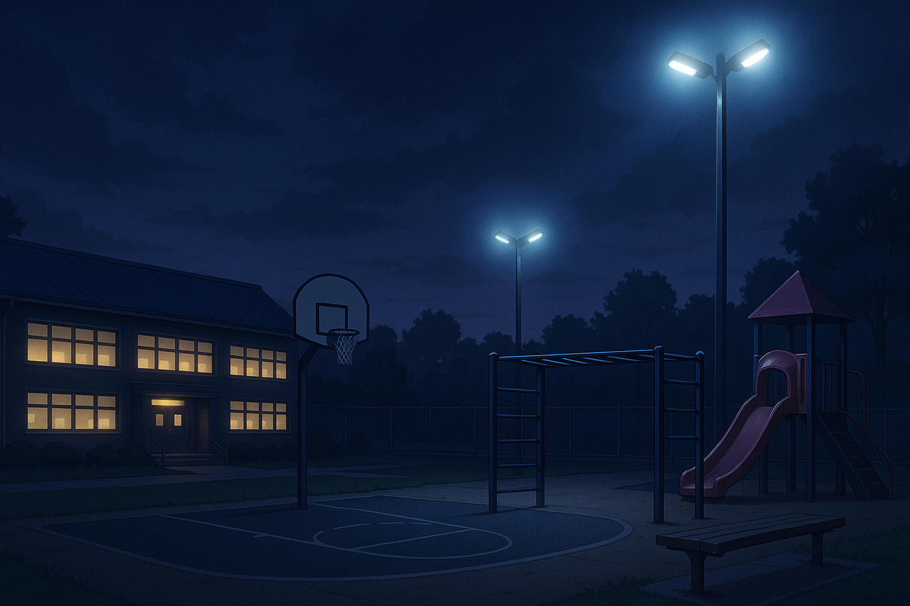

Paldies, par to, ka spēlējāt!

Tas ir spēles sižetiskās līnijas beigas. Tu esi veiksmīgi pabeidzis mācību gadu un iepazinies ar saviem jaunajiem klasesbiedriem. Turklāt esi piedalījies dažādos skolas pasākumos, tados kā: 1. septembris, skolas pikniks, Jaungada izrāde un izlaiduma pasākums. Visu šo pasākumu laikā tev ir brīvprātīgi jāizvēlas atbildes, tādējādi nopelnot punktus, kas tiek parādīti lapas apakšā. Visiem lēmumiem, tāpat kā dzīvē, ir sekas.
| No 0 līdz 6 punktiem | Aiz sevis durvis neaizver. Tu reti sevī daudz, un citiem ir grūti tevi lasīt. Skolas gads pagāja bez lielas komunikācijas, bez konfliktiem, bet arī bez īpašām attiecībām. Varbūt tas bija apzināti, varbūt — aizsargmehānisms. Tev vēl ir laiks mācīties būt atvērtākam un saprast, ko patiesībā vēlies dot citiem. 💬 “Klusums reizēm ir drošākā izvēle. Bet vai vienmēr — labākā?” |
|---|---|
| No 7 līdz 13 punktiem | Stāvot maliņā. Tu centies palikt ēnā — ar cieņu izturies pret citiem, bet reti iesaisties vai ierosini pats. Tevi nepamana kā problēmu, bet arī nepiemin kā piemēru. Tava drošā distance ļāva izdzīvot, bet varbūt atņēma iespēju izjust vairāk. 💬 “Tu biji tur. Vienkārši… nedaudz tālāk.” |
| No 14 līdz 20 punktiem | Savs cilvēks. Tev bija savs loks, savs stils un savs miers. Tu spēji uzklausīt, pasmaidīt, iesaistīties, kad tas šķita īstais brīdis. Tu necenties būt visiem redzams, bet kad runāji — cilvēki klausījās. 💬 “Klusums var būt izvēle. Un tava izvēle — bija ar cieņu.” |
| No 21 līdz 27 punktiem | Vidus centrā. Tu uzplauki, kad blakus bija cilvēki. Spēji dzirdēt, saprast, pajokot un būt īsts. Tev uzticējās, tevi meklēja, un dažiem tu kļuvi par galveno atmiņu visā gadā. Tu biji tas, kurš padarīja dienas gaišākas. 💬 “Tu ne tikai biji klāt — tu biji būtisks.” |
| No 28 līdz 32 punktiem | Aizdedzinātājs. Tev izdevās galvenais — savienot cilvēkus. Ar vārdiem, klusumu, humoru vai līdzpārdzīvojumu. Tava klātbūtne mainīja atmosfēru klasē. Tu ne tikai pielāgojies — tu veidoji vidi sev un citiem. Tu būvēji, ne tikai dzīvoji. 💬 “Tā nav klase, kurā tu ienāci. Tā kļuva par tavu klasi.” |
Pēc pogas nospiešanas jūsu progress tiks dzēsts.
ATGRIEZTIES UZ MĀJASLAPU